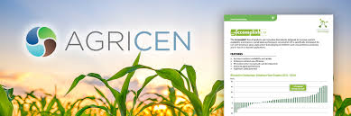
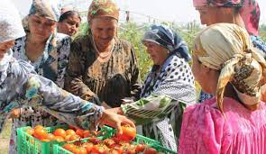

I improve nutrient use
I carried out a land risk assessment for slurry and manure
I learned hoe to manage the water margins
I used to invest in farm productivity.

Provide information on the productivity of agricultural systems now and under different climate impact scenarios. Provide innovative and sustainable agricultural monitoring systems, methods and tools integrating geospatial
page1.
page2
page3
page4